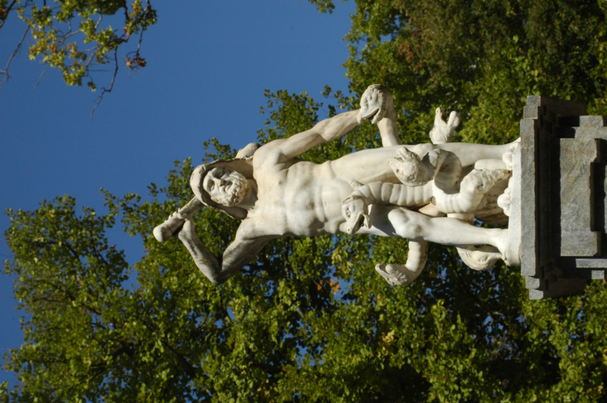

¡Hola, pequeños exploradores! Hoy vamos a conocer una fuente mágica en el hermoso Jardín de Aranjuez llamada la Fuente de Hércules o de Hidra.
Esta fuente es muy especial porque tiene esculturas de Hércules, un héroe fuerte, y de la Hidra, un monstruo de muchas cabezas. ¡Imagínate qué emocionante debe ser verla en persona!
El Jardín de Aranjuez es como un cuento de hadas lleno de flores, árboles y fuentes. La Fuente de Hércules o de Hidra es una de las joyas que hacen que este jardín sea tan mágico.
¡Esperamos que algún día puedas visitar este lugar increíble y explorar todas las maravillas que tiene para ofrecer!